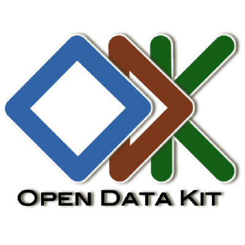

ODK Collect
ODK Collect Barcode Scanner
Barcode Scanner App Protection
App Protection GeoJson to Shapefile
GeoJson to Shapefile QR Code Generator
QR Code GeneratorMobile Data Collection
Presentation and Training Materials
Ringkasan
Biro IT dan Telekomunikasi Palang Merah Indonesia telah memberikan dukungan teknis akan kebutuhan pengambilan data secara elektronik dibeberapa kegiatan program Palang Merah Indonesia (PMI) seperti IFRC-Zurich Insurance Community Flood Resilience, Risk Mapping, IFRC-Samsung WASH Project, Respon Kabut Asap, American Red Cross PERTAMA Project, American Red Cross WASH. Teknologi Pengambilan data elektronik yang diterapkan adalah OpenDataKit (ODK) hasil pengembangan dari Universitas Washington dimana tool tersebut dapat memudahkan setiap program untuk pengambilan data cepat untuk kebutuhan Baseline dan monitoring.
MAterial training yang tersaji disini ditujukan bagi Koordinator survey dan enumerator dan material-material tersebut akan terus berkembang sesuai kebutuhan.
ODK Aggregate
ODK Aggregate merupakan platform aggregasi data survei lapangan menggunakan ODK Collect yang berbasis Android. PMI memiliki beberapa kanal ODK Aggregate sesuai kebutuhan berbasis proyek yaitu:
 GPS Essentials
GPS Essentials
GPS Essentials adalah aplikasi smartphone untuk mengumpulkan data GPS di perangkat mobile. GPS Essentials merupakan alternatif pengganti dari perangkat GPS tradisional. Gunakan GPS Essentials untuk mendandakan waypoint atau merekam track perjalanan kamu. Program ini sangat berguna untuk proyek pemetaan dengan kondisi peta dasar yang masih kosong. Tool ini juga bermanfaat untuk memetakan perjalanan daratmu. GPS Essentials sangat berguna pada saat GPS konvensional tidak cukup jumlahnya.
 OSMAnd
OSMAnd
OSMAnd merupakan android app yang memungkinkan pengguna untuk mengunduh dan memanfaatkan Open Street Map (OSM) offline. Data nya dapat diunduh dengan gratis dan memiliki lisensi yang terbuka. Setiap orang dapat berkontribusi petanya kembali. Humanitarian Open Street Map Team (HOT) adalah kontributor utama data basemap yang tersebar di seluruh dunia.